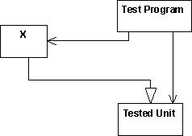
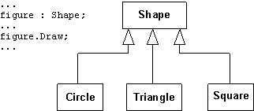

Guidelines:
Unit Test
Topics
Unit testing is implemented against the smallest testable element (units) of
the software, and involves testing the internal structure such logic and data
flow, and the unit's function and observable behaviors. Designing and
implementing tests focused on a unit's internal structure relies upon the
knowledge of the unit's implementation (white-box approach). The design and
implementation of tests to verify the unit's observable behaviors and functions
does not rely upon a knowledge of the implementation and therefore is known as
black-box approach.
Both approaches are used to design and implement the different types of tests
(see Concepts: Type of Tests) needed
to successfully and completely test units.
In addition the individual considerations for each type of test, and the two
approaches mentioned here, there are several design and implementation
considerations that only apply to unit testing, including:
Additional information on these topics is provided in the sections below.
See also Guidelines: Test Case for additional
information on deriving test cases for unit test.
A white-box test approach should be
taken to verify a unit's internal structure. Theoretically, you should test
every possible path through the code, but that is possible only in very simple
units. At the very least you should exercise every decision-to-decision
path (DD-path) at least once because you are then executing all
statements at least once. A decision is typically an if-statement, and a DD-path
is a path between two decisions.
To get this level of test coverage, it is recommended that you choose test
data so that every decision is evaluated in every possible way.
Use code-coverage tools to identify the code not exercised by your white box
testing. Reliability testing should be done simultaneously with your white-box
testing.
See Guidelines: Test Case for additional
information
The purpose of a black-box test is to verify the unit's specified function
and observable behavior without knowledge of how the unit
implements the function and behavior. Black-box tests focus and rely upon the
unit's input and output.
Deriving unit tests based upon the black-box approach utilizes the input and
output arguments of the unit's operations, and / or output state for evaluation.
For example, the operation may include an algorithm (requiring two values as
input and return a third as output), or initiate change in an object's or
component's state, such as adding or deleting a database record. Both must
be tested completely. To test an operation, you should derive sufficient test
cases to verify the following:
- for each valid value used as input, an appropriate value was returned by
the operation
- for each invalid value used as input, only an appropriate value or was
returned by the operation
- for each valid input state, an appropriate output state occurs
- for each invalid input state, an appropriate output state occurs
Use code-coverage tools to identify the code not exercised by your white box
testing. Reliability testing should be done simultaneously with your black-box
testing.
See Guidelines: Test Case for additional
information
If an inherited operation does not work in the descendant, it is classified
as an interaction problem between the descendant and the ancestor. You can
verify the interaction among units when testing use cases. Do not test inherited
operations when you test units. Inherited operations are tested when the use
cases are tested.
An inherited operation can fail in two situations:
- The descendant class modifies instance (or member) variables for which the
inherited operation assumes certain values.
- Operations in the ancestor invoke an operation implemented in the
descendant.
You can avoid the first by forbidding ancestors to modify inherited instance
(or member) variables other than through inherited operations. You can avoid the
second by thoroughly testing the invoked operations.
Classes that are not instantiated, but exist only for others to inherit,
must, of course, be tested. Exactly what that entails may not be obvious, since
testing instances is not meaningful because by definition an abstract class has
no instances. An abstract class can, however, be inherited, and instances of its
descendants can be created. Thus, one goal of testing such classes is to
determine if inheritance is possible and if any instances of descendant classes
exist. A second goal is to determine whether potential calls to the abstract
class itself (this in C++, self in Smalltalk)
will get through. To test this, let the testing program create a descendant
class that inherits the abstract class. The test program tests the unit by
testing the descendant class.

The test program creates a descendant of the tested unit.
Polymorphism is a programming language concept that makes the code easier to
change, but it makes testing more difficult. In the following example you cannot
test the code with every subclass of Shape. You must test this
when you test the use cases.
An interesting effect of polymorphism in object-oriented languages is that
every sending of a message in Smalltalk, and function call in C++ is a potential
CASE statement.
Example:
Assume you have the following class hierarchy, and the class Shape
has an operation Draw.

Copyright
© 1987 - 2001 Rational Software Corporation
|  Artifacts >
Artifacts >
 Test Artifact Set >
Test Artifact Set >
 {More Test Artifacts} >
{More Test Artifacts} >
 Test Case >
Test Case >
 Guidelines >
Guidelines >